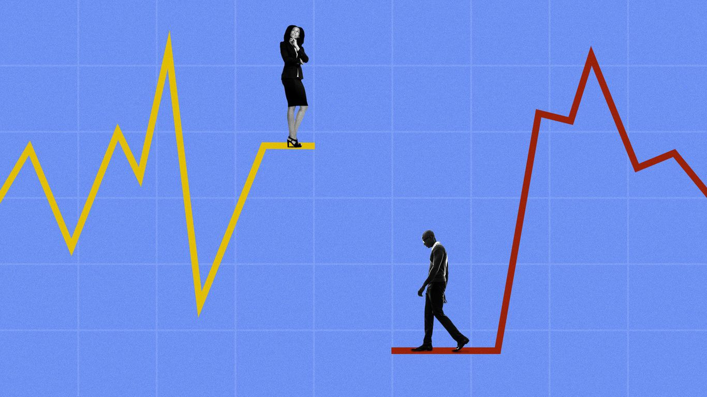
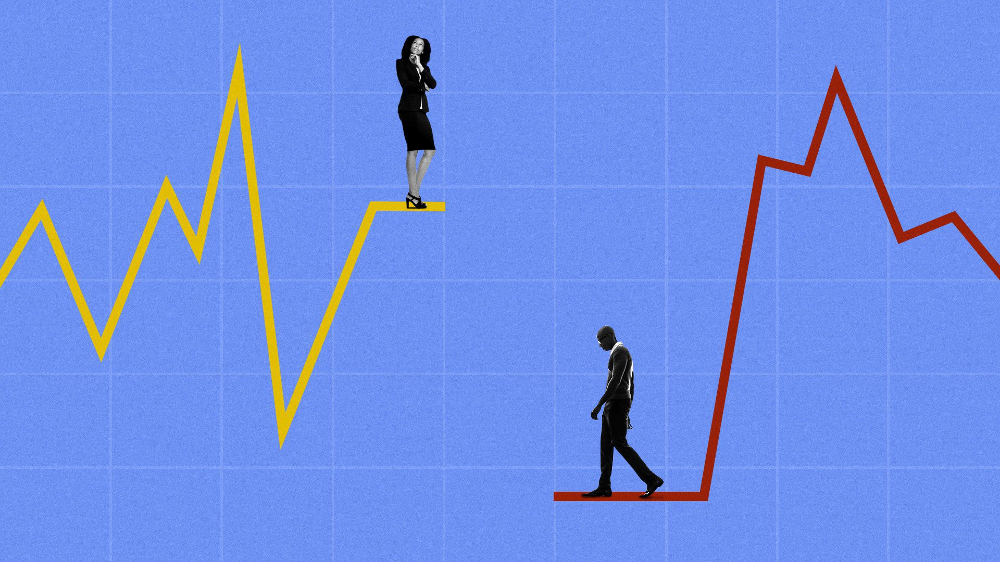
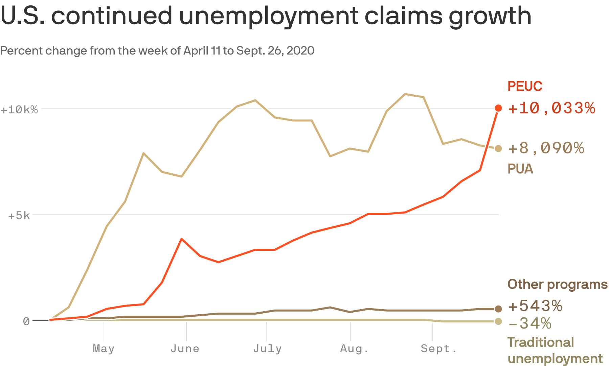
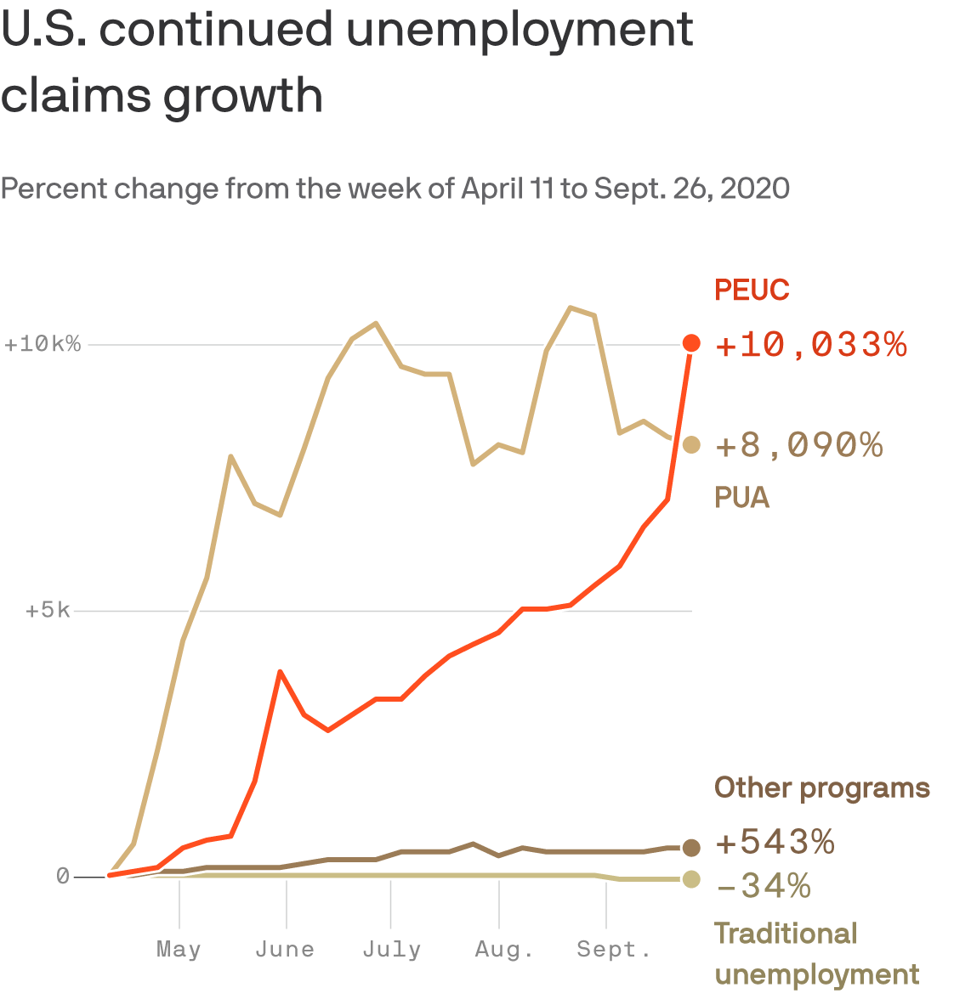

Markets swell as the economy shrinks
Markets swell as the economy shrinks

The economy is sputtering, but the markets are thriving — a highly unusual event that shows how the coronavirus has thrown all bets off.
Why it matters: The disconnect adds to the wealth gap.The richest 10% of households — who own 84% of stocks — are getting richer, while millions of out-of-work Americans cross their fingers that pandemic unemployment benefits will be extended.
Driving the news: The equities markets closed Tuesday with their best quarterly performance since 1998 — the type of upswing that usually doesn't happen when the economy is in as precarious shape as it is now.
While the jobs numbers released Thursday seemed like good news — 4.8 million jobs were created in June, and the unemployment rate fell to 11.1% — many of the newly employed were people returning to work at their pre-pandemic jobs. And, as Axios' Felix Salmon points out, the number of 'permanent job losers' actually rose 25% in just one month. Where it stands: After plummeting in March when the World Health Organization declared the coronavirus outbreak a pandemic, the stock markets have been rising — somewhat unexpectedly — for a variety of reasons.
The Federal Reserve stepped forward with aggressive actions to flood the markets with as much cash as possible. Congress passed extensive relief programs. Investors remain flush with cash and need somewhere to park it (and the bond markets offer meager returns). Expectations are that a COVID-19 vaccine will emerge, bringing things back to a new normal. Yes, but: It's (still) the economy that matters most.
U.S. GDP plunged 5% in the first quarter, according to the Commerce Department, personal income decreased 4.2% in May, and consumer confidence — while higher in June than in March, April or May — is still well below pre-crisis levels. According to a YouGov/Economist survey, only 10% of Americans think the stock market is the best gauge of the nation's economic health, while 37% say it's the jobs report (which — in a welcome dash of very good news — came in far more positive than expected on Thursday). Roughly half of Americans own any stocks at all, whether directly or through 401(k)s or other vehicles. President Trump has taken credit for the exuberant stock market
and for what he describes as a burgeoning economy — despite the signs of economic shakiness.
'Today's announcement proves that our economy is roaring back,' Trump said on Friday after the June jobs numbers were released. 'WOW.Record Growth in 2nd Quarter!Under Corrupt Joe Biden and his MASSIVE Tax and Regulation increases, Markets, and your 401k’s, will PLUNGE!Expect a Record 2021!'he tweeted on Wednesday. Many people in the business world fear a Democratic victory would usher in policies that could dampen the market: wealth taxes, a rollback of corporate tax cuts, climate change mandates for utilities and energy companies.
'The Democratic Party has a platform that is pretty much anti-growth, but those platforms can change,' Rich Sega, global chief investment strategist at the asset management firm Conning, tells Axios. 'The stock market is looking toward the future.By next January, I think we could recover virtually everything that we’ve lost this year.' Between the lines: While many experts say that we seem to be past the worst of the pandemic's impact on the economy, rising case numbers throw everything into question.
'The economy's fate is inextricably linked to the path of the virus,' John C.Williams, head of the New York Federal Reserve, said in a speech this week.'A strong economic recovery depends on effective and sustained containment of COVID-19.' Heading into second-quarter earnings season, 'Nearly 200 companies in the S 500 have withdrawn their customary forecasts for the year, according to FactSet, and half as many companies as usual are providing quarterly earnings guidance,' per the New York Times. Thought bubble from Axios' Felix Salmon: The S 500 and other big indices comprise the world's biggest companies with massive balance sheets and easy access to all the liquidity they need.The virus has effectively wiped out their small-business competition, so the giants now have the field to themselves and get to carve it up among them.
What they're saying: The disconnect between the economy and the stock markets is 'extreme,' Vikram Mansharamani, a Harvard lecturer who specializes in financial bubbles and business disruption, tells Axios.'It really does remind me in many ways of 1999.'
'Markets are not supposed to become inefficient,' Mansharamani says.'This is not supposed to exist, according to some academics.' Portfolio managers are taking the long term view, staying put with their money while they wait for a vaccine.'Everyone knows second-quarter earnings are going to be horrific,' Sam Hendel, president of Levin Easterly Partners, tells Axios.'I'm looking toward 2021 earnings already.'
Posted On: 2020-07-03T00:00:00
Posted By: Jennifer A. Kingson




Content Date: 2020-07-03
Download Date: 2021-05-15
Document ID: L0C04CHRF